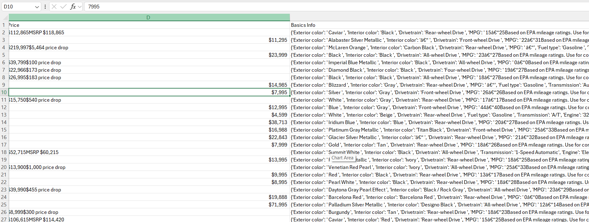
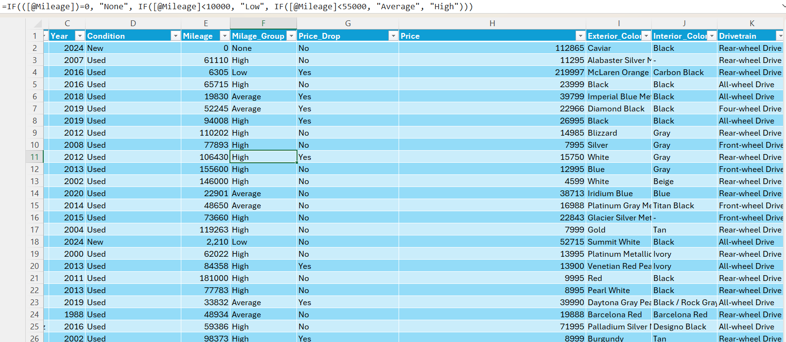
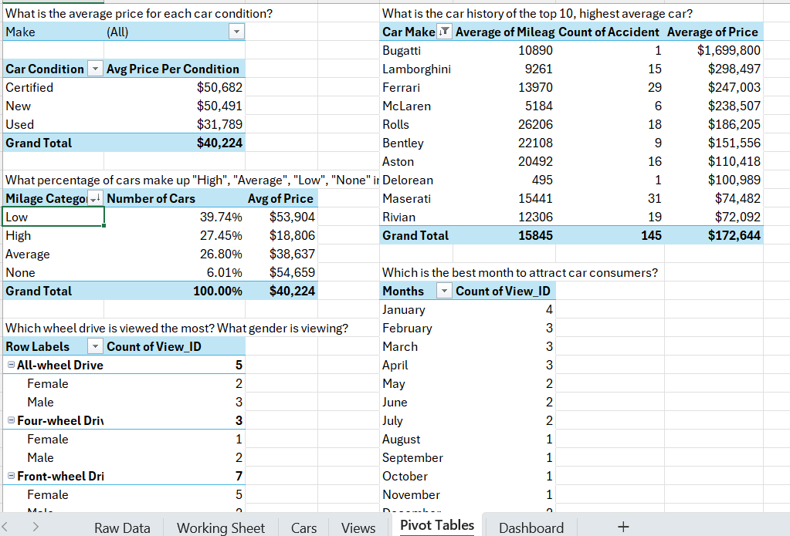

This project aims to analyze car listings and viewer interactions to understand consumer preferences, viewing patterns, and market trends in the automotive industry. Businesses can use this to their advantage to increase sales and beat competitors
The data car used for this project comes from Kaggle, the viewer data is an extention of the data created by me.
By analyzing viewer interactions and trends, dealerships can tailor their inventory to meet demand, set competitive prices, and create personalized marketing efforts that resonate with specific demographics. This data-driven approach not only improves customer satisfaction but also allows businesses to anticipate market shifts and adjust their strategies accordingly, ultimately leading to increased sales and profitability.
The data analysis involved extracting the dataset from Kaggle, transforming it in Excel for clarity, and employing pivot tables to explore key insights. The resulting dashboard visualizes viewer interactions and preferences, facilitating easy interpretation of the data.
 The dashboard created for this project displays key metrics including car viewing trends, preferences by viewer gender, and insights into the most popular car makes and conditions.
Thank you for viewing this project.